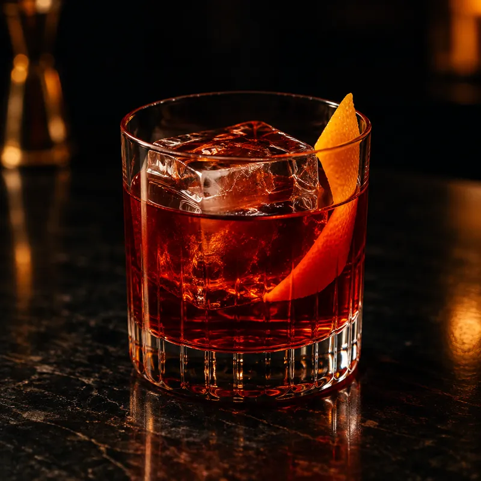
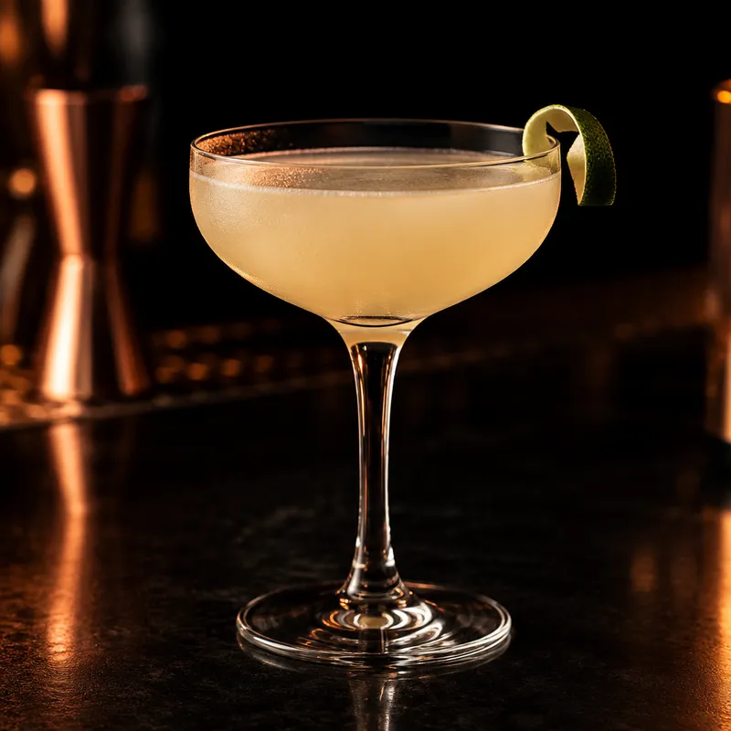
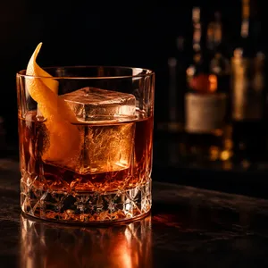
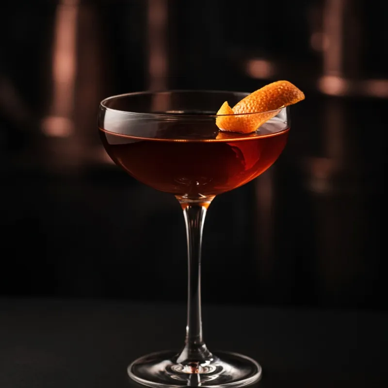

The bar tool that keeps up with service.
Pour is a native bartender's assistant: a library of classic specs in your pocket, instant "what can I make" matching against your actual bottles, one-hand scaling, and a timer you can feel. Fast, precise, calm under pressure.

● Can make
● Can make
▲ Missing 1
● Can makeIllustrative app preview · iPhone app in development
Everything a working bartender reaches for.
An offline core for day-to-day service — recipes, matching, scaling, timers, inventory, and a shopping list.
Instant recipe search
Real-time search across ~30 seeded classics — name, ingredient, or tag — with filter chips and pull-to-refresh. Works offline.
"What can I make"
Ingredient normalization maps "London Dry Gin" and "Beefeater" to gin — so matching reflects the bottles you actually have.
Scale & batch
Serving scaling and batch mode with accurate oz ⇄ ml conversion — dashes, barspoons, and parts handled properly.
A timer you can feel
Large circular progress ring with calibrated haptic ticks at 10s, 5s, and done — no need to look at the screen mid-shake.
My Bar inventory
Categorized stock with in/out toggles, low-stock flags, and one-tap quick-add of a recipe's missing ingredients.
Shopping list
Missing ingredients flow straight into a shopping list with purchased tracking — restocking is a single tap.
Custom recipes
House specs and your own builds, with a glass picker and full measure support — stored locally, yours forever.
Favorites & sharing
Save favorites and share a recipe as text. Open recipe and tab links directly in Pour.
Offline-first
Every free feature works with no network. Cached recipes, local SwiftData storage, zero account required.
Calm, readable, one-handed.
Dark surfaces, warm copper accents, and monospaced measures. These are illustrative previews, not live app screens; details may change before release.
The tools on the rail.
Common bar tools every station should have — and what each one is for.
Jigger
Dual-sided measure. The ¾ oz / 1½ oz pair covers most classic specs.
Boston shaker
Tin-on-tin or tin-on-glass for shaking. Seals tight and breaks cleanly.
Mixing glass
For stirred drinks. Holds ice and spirit while you build dilution.
Hawthorne strainer
Spring strainer that fits a shaker tin. Holds back ice on shaken drinks.
Julep strainer
Fits a mixing glass. Used for stirred drinks so the ice stays behind.
Fine strainer
Small mesh cone. Catches ice chips and pulp when double-straining.
Bar spoon
Long spoon for stirring. The twist handle helps control the motion.
Muddler
For herbs, fruit, and sugar. Press, don’t pulverize, so the drink stays clean.
Peeler / channel knife
For citrus twists and garnishes. A Y-peeler covers most needs.
Speed pourer
Fits the bottle neck for a consistent, controlled pour during service.
Citrus press
Fresh juice on the fly. A hinged press is faster than a reamer mid-rush.
Ice tools
Scoop or tongs for serving ice. An ice pick for large cubes or spheres.
Where the classics come from.
A few stories behind the classics, followed by related builds. Cocktail origins are often disputed; these are common accounts, not definitive histories.
Old Fashioned
Late 1800s. Whiskey, sugar, bitters, and a twist — the drink that kept the name “cocktail” after the category got crowded.
Negroni
Traditionally traced to Florence around 1919, when Count Camillo Negroni reportedly asked for gin in an Americano. Equal parts gin, Campari, and sweet vermouth.
Boulevardier
Recorded in Harry MacElhone’s 1927 book Barflies and Cocktails and associated with Erskine Gwynne, whose magazine shared the name. Whiskey, Campari, and sweet vermouth.
Daiquiri
Commonly associated with Cuba in the late 1890s and the mining town near Santiago. Rum, lime, and sugar form its familiar sour structure.
Related builds
Old Fashioned ↔ Manhattan
Both pair whiskey with bitters. The Old Fashioned uses sugar; the Manhattan brings sweet vermouth. Compare their balance rather than treating one as a direct historical descendant.
Related builds
Americano ↔ Negroni ↔ Boulevardier
The Americano is Campari, sweet vermouth, and soda. Drop the soda, add gin, and it’s a Negroni. Replace the gin with whiskey and it’s a Boulevardier.
Related builds
Daiquiri ↔ Mojito ↔ Hemingway Daiquiri
Rum, citrus, and sweetness connect these drinks. A Mojito adds mint and soda; a Hemingway Daiquiri uses grapefruit and maraschino liqueur. These are recipe relationships, not a proven family tree.
Built for the well, not the showroom.
Fast under pressure
52pt rows, 44pt+ targets, sticky actions. Readable at arm's length, usable one-handed mid-rush.
Private by default
Free tier is fully local — no account, no tracking, no analytics on your recipes or inventory.
Designed for accessibility
VoiceOver labels, Dynamic Type, and Reduce Motion support are built in. Device and assistive-technology testing remains part of release preparation.
Dark-mode first
Designed for a dark bar at 1am — warm copper on near-black, with a fully supported light appearance.
A few useful answers.
Can I download Pour today?
You can try six recipes in your browser now, with inventory matching, scaling, and a shopping list. This browser demo is separate from the iPhone app, which is in development for iOS 17 and later. A public App Store or TestFlight link has not been announced. Follow the project on GitHub for release updates.
What works without an account or connection?
The implemented core stores recipes, inventory, favorites, shopping lists, and preferences on your device. Search, matching, scaling, timers, and barcode scanning run locally. The camera is used only to read a barcode on the device; images are not stored or sent. AI assistance, venue tools, and cloud sync are planned features.
Does “can make” check amounts or allergies?
Matching checks whether required ingredients are marked in stock. It does not measure how much remains in a bottle or check allergies. Review the full spec, including optional ingredients and garnishes, before serving.
Where does my data go?
The current app has no account or analytics service. Sharing a recipe sends its text to the destination you choose. Device backups depend on your Apple settings. This website has no analytics scripts or forms; its host still handles normal web requests. Read the privacy details.
Ready when the rush hits.
Pour is in active development for iPhone (iOS 17+). The repo is where it happens.
Currently in developmentView on GitHub
No public App Store or TestFlight download is available yet. Follow development on GitHub.